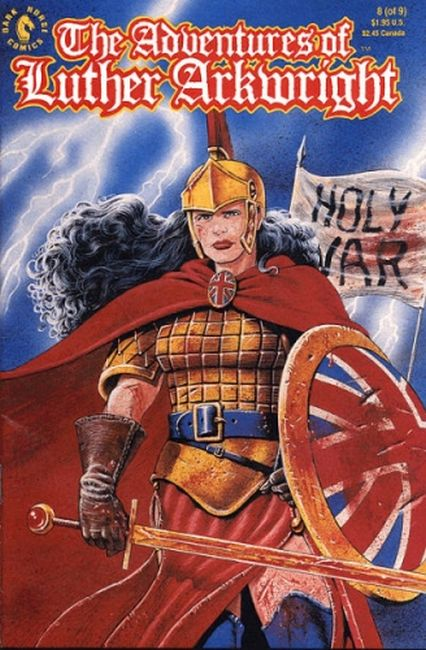
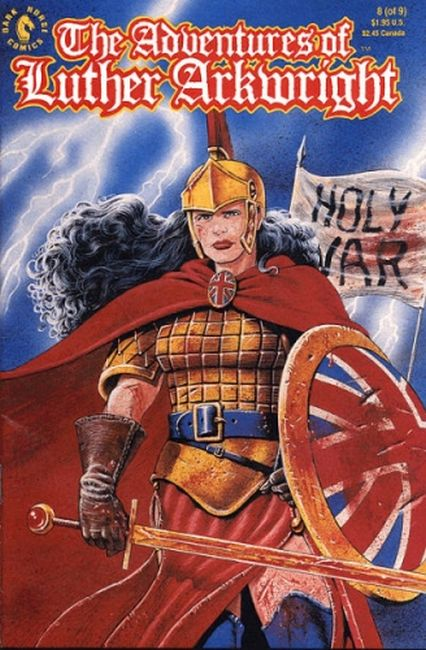

About: The story is adult in tone, with many mythological, historical and political references. Its genesis owes something to Michael Moorcock's Jerry Cornelius stories, though Moorcock and Talbot agree that the similarities between the characters are limited.
Warren Ellis calls Arkwright "probably the single most influential graphic novel to have come out of Britain to date... probably Anglophone comics' single most important experimental work."
In 1999 Dark Horse published Talbot's sequel to Luther Arkwright, which was called Heart of Empire. In 2006 it was republished as a webcomic using the digitally remastered files at the official fanpage.
Story:
Luther Arkwright is a work of apocalyptic science fiction set in parallel universes. The eponymous hero has the unique talent of being able to move between parallels purely by force of will, and is aided by Rose Wylde, a telepath whose many incarnations across the parallels are able to communicate with one another.
Luther and Rose are agents of a parallel known as "zero-zero", whose stable position in the multiverse has allowed the development of a world at peace with itself and sufficiently high technology to monitor the parallels for signs of the malign influence of the "Disruptors".
Most of the action in the story is set in a parallel world where the English Civil War has been indefinitely prolonged by the actions of the Disruptors, who are also responsible for unleashing "Firefrost", a legendary artifact which is destabilising the multiverse. Arkwright intervenes on the Royalist side in order to draw out the Disruptors and locate and destroy Firefrost. Along the way his unit is ambushed, and he is killed, only to return to life with his powers enhanced.
The storytelling of the early episodes is complex, with flashbacks to Arkwright's upbringing by the Disruptors, escape to the parallel of his birth and early missions for zero-zero intermingling with the course of his mission in neo-Cromwellian England, with story-telling techniques and art styles shifting to match.
The scenes of Arkwright's death and rebirth are particularly abstract and full of religious and mythological symbolism. The comic is unusual in being one of the few adventure stories where the readers and the protagonist both know from the beginning that he's going to die, only the event itself is not known.